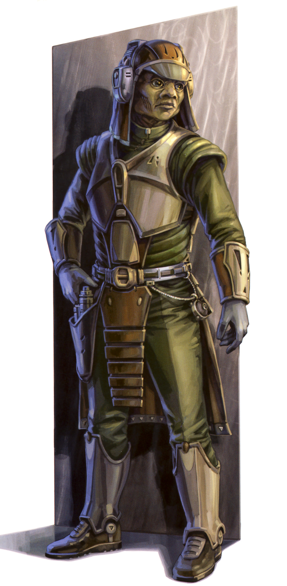

Clawdite
clawdite
Special Abilities: Clawdites begin the game with one rank in Resilience. They still may not train Resilience above rank 2 during character creation.
Changeling: As an action, a Clawdite may suffer 5 strain and make an Average( ) Resilience check. If the Clawdite succeeds, she changes her appearance to match that of a silhouette 1 character whom she has observed before. An observing character must make opposed Perception vs Deception check to detect that something is amiss with the impersonated character’s likeness, mannerisms, or behavior. As always, the GM can add or for situational effects that might affect the check, such as if the Clawdite’s garb does not match expectations or if the Clawd ite has studied the impersonated individual’s mannerisms closely
Native to the planet Zolan in the Mid Rim, Clawdites are primarily known across the rest of the galaxy for their innate ability to transform their appearance. This knack grants the species a value to the larger galaxy that far exceeds any of their homeworld’s other exports—to the chagrin of many Clawdites, some of whom feel that their species’ cultural and techno logical contributions to galactic culture are ignored because of the fixation on their very peculiar genetic ability. Because of their shape-changing talents, Clawdites remain in high demand for careers focused upon deception, including espionage and other, even less savory pursuits. Their natural abilities and scar city give members of the species legendary status as spies and informants. Rumors of a Clawdite’s presence naturally alert guilty parties to be more vigilant, while a crime lord who retains a Clawdite’s services gains prestige through the hire.
Clawdites are a humanoid species with reptilian traits. In their default forms, their skin has a rough texture that typically ranges in color from pale yellow to dark green. The pupils of their large eyes are slitted, with irises that range in color from yellow to deep blue. However, many galactic citizens who interact with Clawdites never actually see this form, or even know that they are dealing with a Clawdite. Some Clawdites create a single preferred guise that they use for their public dealings, never showing their true form. This has various advantages, from throwing potential enemies off guard when they reveal them selves to keeping suspicion that they might be an infiltrator to a minimum. After all, when people know there is a Clawdite around, they tend to be more cautious. On the other hand, some Clawdites use this to their advantage by openly displaying their true forms, to remind everyone of their unique ability—especially when that ability is an asset to the job at hand. Those Clawdites who do not rely upon their shapeshifting for professional reasons tend to remain in their default state around others to help reassure them that they are acting in good faith. These practices vary by individual and the expectations of the company that they currently keep.
Clawdites have two inherent physiological traits that enable their shape-changing. The first is the particularly sophisticated chromatophores that exist within their skin cells. These enable them to change their skin tone at will, and Clawdites with sufficient practice can match nearly any color that their eyes can perceive. The second is the capacity to control aspects of their lymphatic system consciously and with great precision. Using this control, a trained Clawdite can physically shrink and grow parts of their body, stretching their skin to take on different shapes. Replicating a specific appearance in this way requires practice.
Because Clawdites depend upon their body’s internal abilities to shape-change, they cannot alter their mass in the process. This means that they can make minor alterations to their size based on their density, but they cannot substantially grow or shrink. Their humanoid anatomy also prevents them from relocating organs, except in superficial ways. To help offset this limitation, some Clawdites wear an automated saline pump. This enables them to adjust the amount of fluid within their bodies, increasing their ability to change their size within a limited range.
Clawdites have a particularly strong inclination toward individualism, and many have a difficult time forming close bonds, even—or especially—with members of their own species. This is in part because of the mutability of their appearance. A trusted con tact could vanish with a shared resource, or a deceitful individual could easily assume another’s identity. As a consequence, their society on Zolan has developed various measures to verify identities. Political and social organizations depend upon high levels of redundancy, and records are maintained in the open so that individuals can freely validate one another’s work. Nevertheless, personal responsibility and accountability have remained challenging principles to enforce across Clawdite history. Most Clawdites are guarded even when greeting familiar individuals, and rely on conversational cues and personality traits far more than physical appearance to verify identity.
Clawdites’ entrance onto the galactic stage at large had a substantial impact on how they viewed their ability. Their unique shapeshifting trait made Clawdites the perfect spies, and many were hired to work offworld by governments, criminal their culture and how syndicates, and military organizations. Now, Clawdites are found all across the Outer Rim—though some Clawdites live in secret, preferring that their acquaintances not know their true species, lest they distrust them for it or worse, try to exploit it.
Zolan is a warm and arid world, located near the Corellian Run. During the development of the Clawdite species, a spike in solar activity bathed the world in radiation. The Clawdite’s ability to modify their skin color and body shape was one of many adaptations that resulted from this massive change in Zolan’s climate. The predatory monzu and numerous other species from Zolan share this trait, though many species developed different means of surviving despite the ongoing radiation bombardment. As with any event that disrupts a period of evolutionary stasis, most of Zolan’s lifeforms were unable to cope with the heightened radiation and died off precipitously, and those that remained dramatically shaped by it.
Zolan’s radiation levels eventually reverted to a more survivable level, as its star completed its extreme radiation emission cycle. Traits developed to survive this catastrophe were turned to new ends, resulting in a number of species that could change their physiology as well as others with thick bony plating to protect against radiation. Beyond that, the extinction event reshaped Zolan. Large portions of the planet became desolate wastelands. Most of the plants and animals that had once dwelt there were eliminated, and new life forms only slowly encroached on the most devastated regions.
This planetary transformation had serious repercussions on the world’s environment, as well as its ability to provide for the Clawdite population. In fact, the resultant scarcity of resources very likely contributed to the cautious and self-reliant nature of Clawdite society as it developed.
Virtually all Clawdites are fluent in Basic. Zolanese is their native tongue, though it is rarely heard off the planet. Clawdites generally refuse to teach Zolanese to offworlders, and it is used as a primary language only in the rural regions of their world. During rare offworld encounters between Clawdites, they often use Zolanese as a secret language to identify themselves without breaking their cover.
Clawdites excel in careers that prioritize independent competency. Though many rely upon more nefarious (or at least self-serving) applications of their shapeshifting abilities to work as Smugglers or Bounty Hunters, many other Clawdites work as Explorers, Technicians, or in specialized Colonist roles. Many Clawdites who originally hail from Zolan prefer self-reliant professions over which they have a high degree of control, rather than having to trust that others will act in their best interests.
A Clawdite’s natural appearance is easily recognized, particularly among those who regularly work within the galaxy’s dark under belly. Crime lords who hire a Clawdite are very proud that they have a shape-changer in their employ. The species is uncommon, and having a loyal Clawdite as a member of an organization carries a level of prestige. Further, most syndicate leaders believe that their allies recognize the Clawdite could be impersonating anyone in any situation. This can be a strong motivator for a more honest relationship, at least on the part of their allies. For a Clawdite PC, such expectations can represent an opportunity or a challenge. A Clawdite who does engage in various forms of skulduggery might enjoy having employers pay more for her work, while one who is engaged in honest trade may be frustrated by clients’ unfounded worries that anyone they meet could be the Clawdite in disguise. To help alleviate such concerns (even if they are unfair), some Clawdites teach their friends and business partners how to identify them by their behavior and manner isms rather than just their looks, as Clawdites generally do with other Clawdites they know.